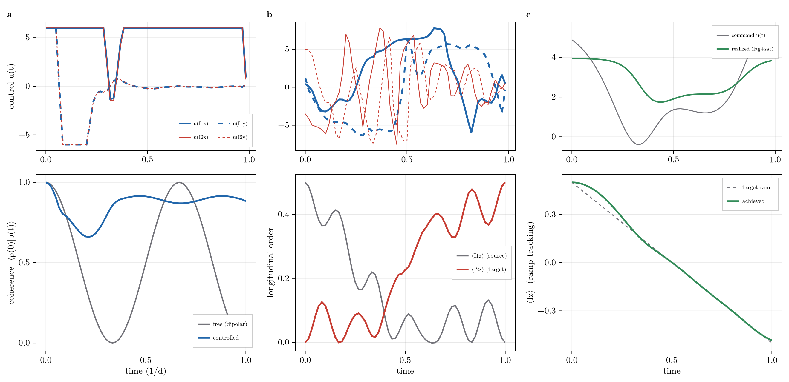

Control and Pulse Optimization
RSD differentiates through the control problem directly, rather than wrapping an outside optimizer around the solver. The generator is affine in its parameters: a drift plus fixed superoperators, each scaled by a control or structural parameter,
\[\mathcal{L}(t) = \mathcal{L}_\text{drift} + \sum_j u_j(t)\,\mathcal{L}_j^\text{drive} + \sum_a \theta_a\,G_a^\text{struct},\]
so every parameter derivative is a cached superoperator (build_liouvillian is affine in each term). A GRAPE adjoint sweep then gives the gradient of any objective with respect to all of the control amplitudes u_j(t), the pulse shapes, and the structural parameters θ_a (couplings, rates) from one forward and one backward propagation, independent of the number of parameters. The optimizer runs in the same basis as the forward dynamics, truncated by grade, so pulse and parameter design inherit the polynomial scaling of the package.
The control/GRAPE surface is experimental; the API may still change. It is validated against central finite differences in test/test_control.jl and scripts/validation/validate_grape.jl.
The Control Problem
A control problem pairs a modulation (the drift plus the control drives) with a ControlObjective, assembled by control into a ControlProblem and solved by grape:
using RestrictedSpinDynamics
N = 2
basis = restricted_basis(N, N)
H = hamiltonian(zeeman(N, [0.0, 5.0]), jcoupling(N, 1, 2, 3.0)) # drift
yunit = drive_field(N, 1:N; ω1 = 1.0, phase = π/2) # a controllable drive field
mod = modulation(N, H, drive(yunit, t -> 0.6)) # drift + one drive (0.6 = initial amplitude)
c0 = ComplexF64.(product_state_coeffs(basis; mags = [(1, 0, 0), (1, 0, 0)])) # start along x
prob = control(mod, MaximizeExpectation(spin_pm(N, 1, +1))) # maximize Re⟨I+⟩ on spin 1
res = grape(basis, prob, c0, range(0, 1; length = 41); iters = 100) # :adam (default)
alt = grape(basis, prob, c0, range(0, 1; length = 41); iters = 100, optimizer = :ascent)
(adam = round(res.value, digits = 3), ascent = round(alt.value, digits = 3))(adam = 1.535, ascent = 1.112)The control amplitudes are constant on each interval of the propagation grid, so grape optimizes one number per drive per interval and returns the optimized amplitudes (ndrive × (length(ts) - 1)), structural params, actuators/parametric command and shape values, the objective value, its history over the iterations, and a forward replay (final_state/trajectory) at the optimum. A Selective drive envelope (one that depends on the state) is rejected: the closed loop is no longer affine in the controls.
Each iteration is one forward and one backward propagation (control_gradient); optimizer sets how that gradient becomes a step:
:ascent: normalized gradient ascent,u += lr · g/‖g‖, a fixed-length steplralong the unit gradient direction. It uses one global step size for every amplitude; transparent and predictable, but slow to cross flat directions and prone to zig-zag when the control landscape is ill-conditioned (the usual case, with one amplitude per interval).:adam(default): adaptive moment estimation,u += lr · m̂ / (√v̂ + ε). It keeps a running meanm̂(momentum) and variancev̂of the gradient per parameter, so each coordinate gets its own effective step; flat and steep directions both make progress, and the step auto-damps as the variance grows. In the example above the two reach different optima in the same 100 iterations (adam the higher), which is typical::adamis the robust default for the many-parameter GRAPE problem, while:ascentis the lighter-weight choice when the gradient is already well-scaled and a simple fixed step is wanted.
Objectives
ControlObjective is the abstract cost functional; a concrete objective supplies the scalar cost at the final state and the terminal costate that seeds the adjoint sweep:
MaximizeExpectation: driveRe<O>up (state transfer, polarization).StateOverlap: maximize the overlap with a target state.TrajectoryFit: a running cost that tracks one or several target trajectories (one observable, or several channels) over the whole window.
Actuators and Parametric Drives
Two layers sit between the optimizer and the raw amplitudes when a bare waveform, one value per interval, is not the right handle:
actuatorwraps a generator term in a physical response: alagtime constant (first order),:langmuirsaturation, boxbounds, and an initial command. The optimizer commands the actuator; the actuator drives the generator. This models a real knob (a pump, a field coil) that cannot slew or push arbitrarily hard.ParametricDrivereplaces that waveform with a smooth envelopeu(t) = f(θ, t)of a few shape parameters, so GRAPE optimizesθ(amplitude, center frequency, sweep rate) rather than one value per interval; this is the parametric pulse (CRAB) step, limited in bandwidth by construction. Build one withparametric_driveand any envelopef(θ, t)(for example a linear chirp, the optimizable sibling of the fixedchirp_drive). The gradient chains the adjoint, interval by interval, through the ansatz Jacobian∂f/∂θ, with no extra propagation.
The Adjoint Gradient
control_gradient is the engine underneath grape: one forward trajectory and one backward costate sweep (seeded by the objective) yield every parameter gradient at once, since control amplitudes and structural parameters carry the identical adjoint gradient Re<λ, G·c> and differ only in the time reduction (one value per interval versus summed over the window). The forward trajectory and the backward costate are the two sides of trace duality, the Schrodinger and Heisenberg pictures of the same expectation.
Structural parameters ride that same adjoint. The structural argument to control declares tunable drift parameters (a coherent term or jump list of unit strength added as θ_a·∂𝓛/∂θ_a), so GRAPE optimizes couplings and rates alongside the pulses; this is how a handle on engineered dissipation or a gain bias (the pH2 rate a SABRE RASER actually turns) enters the optimization.
The downstream layer for the inverse problem (system identification and state estimation) reuses this adjoint; it lives in the Inference submodule.
Worked Examples: Gradient-Based Control
One forward and one backward propagation differentiate any objective through the restricted-basis dynamics, so the same control/grape call solves different control problems by swapping only the objective, and where the knob is not a bare waveform, the actuator chain.
prob = control(mod, objective; bounds = (-8.0, 8.0), actuators = ...) # objective is the only variable
res = grape(basis, prob, c0, ts; iters = 300, optimizer = :adam, lr = 0.3)
Columns (a)-(c): three objectives. Top row, the optimized pulse; bottom row, the dynamics it drives.
- (a) Coherence preservation (decoupling). A
TrajectoryFitholds the transverse coherence $\langle\rho(0)|\rho(t)\rangle$ at its initial value against a dipolar coupling that otherwise collapses and revives it; it stays above 0.66, settling near 0.88. The exact-dynamics, finite-pulse analogue of perturbative Average Hamiltonian (AHT) decoupling. - (b) Polarization transfer. A
MaximizeExpectationon $\langle I_{2z}\rangle$ drives an INEPT-like transfer across the J-coupling: $\langle I_{1z}\rangle$ empties from $\tfrac12$ to zero while $\langle I_{2z}\rangle$ fills to $\tfrac12$. - (c) Actuator-aware control. An
actuator(first-order lag,:tanhsaturation) sits between GRAPE's command and the realized drive. Commanding $\langle I_z\rangle$ along a $+\tfrac12$ to $-\tfrac12$ ramp, the realized value tracks it but falls short near the endpoints, where the demanded drive exceeds the saturation limit.
All three share one gradient, basis, and propagator. Script: scripts/control/gradient_control_showcase.jl.
RestrictedSpinDynamics.Actuator — Type
ActuatorA control channel that reaches a generator parameter through a realistic transfer chain, so the quantity GRAPE optimizes is a command u(t), not the physical parameter itself:
command u(t) --lag(τ)--> p(t) --saturation f--> θ(t) = f(p(t)) --> θ(t)·G in 𝓛 .This generalizes a fast ideal drive to any real actuator (slow pump pressure, microwave/laser power, field): a first-order lag (bandwidth limit), a static saturation (one-sided :langmuir θ = θmax·p/(p+K), or symmetric :tanh θ = θmax·tanh(p/K)), and a command bounds clamp. The gradient chains through both (filtered GRAPE): one backward pass, FD-verified. Build with actuator; pass to control via actuators = [...]. Fields: term (the lowered generator term, coherent PauliDict or a (jump, unit_rate) pump), lag (τ; 0 = instantaneous), sat (:identity/:langmuir/:tanh) with satmax/satK, bounds, init (initial command), command (per-interval commands; empty = constant init).
RestrictedSpinDynamics.ControlObjective — Type
ControlObjectiveAbstract supertype for a GRAPE cost functional. A concrete objective implements the internal hooks RestrictedSpinDynamics.objective_value(obj, basis, cT) (the scalar cost at the final state) and RestrictedSpinDynamics.objective_seed(obj, basis, cT) (the terminal costate λ_T = ∂J/∂c(T) for the adjoint sweep). Subtypes: MaximizeExpectation, StateOverlap, TransientGain.
RestrictedSpinDynamics.ControlProblem — Type
ControlProblemA GRAPE problem: a modulation (drift 𝓛_0 + control drives), a ControlObjective, optional free structural parameters, and optional Actuators. Build with control; optimize with grape or query gradients with control_gradient. Fields:
mod::Modulation: drift + control-drive terms (each drive's envelope is the amplitude initial guess).objective::ControlObjective.structural::Vector{Tuple{Any,Float64}}:(unit_term, init_value)pairs;unit_termis a coherentPauliDict/TensorDictor a jump list (unit strength), lowered to∂𝓛/∂θ_aexactly like a drive.free_amplitudes::allor a vector of drive indices whose amplitudes are optimized.bounds:nothingor(lo, hi)box clamp on control amplitudes.penalty::Float64: fluence (Σ u²) regularization weight.actuators::Vector{Actuator}: command-driven channels with lag/saturation (filtered GRAPE).
RestrictedSpinDynamics.MaximizeExpectation — Type
MaximizeExpectation(op)Objective J = Re⟨O⟩(T) = Re(⟨o, c(T)⟩), the final-time expectation of observable op (a PauliDict or TensorDict). o is the observable covector; the adjoint seed is conj(o) (the backward recurrence uses the conjugating inner product).
RestrictedSpinDynamics.ParametricDrive — Type
ParametricDriveA coherent drive whose continuous envelope is a smooth function of a FEW shape parameters, u(t) = f(θ, t), so GRAPE optimizes θ (amplitude, center frequency, sweep rate, ...) rather than one amplitude per interval. This is the parametric-pulse / CRAB step, natural for chirps and adiabatic sweeps, and bandwidth-limited by construction. The envelope is sampled on the propagation grid for the forward pass, and the gradient chains the per-interval adjoint gradient through the ansatz Jacobian ∂f/∂θ (finite-differenced on the scalar f, no extra propagation). Build with parametric_drive; pass to control via parametric = [...]. Fields: generator (the drive operator), f ((θ,t)->Float64), params (θ), bounds (nothing | (lo,hi) applied to all params). NOTE: the grid must resolve the envelope's fastest oscillation (f_max·dt ≪ 1) for the piecewise-constant sampling to be faithful.
RestrictedSpinDynamics.StateOverlap — Type
StateOverlap(target)Objective J = |⟨target, c(T)⟩|² with the conjugating pairing ⟨target, c⟩ = Σ conj(target_i) c_i. target is a coefficient vector in the same basis as the state. Seed λ_T = 2·⟨target, c(T)⟩·target.
RestrictedSpinDynamics.TrajectoryFit — Type
TrajectoryFit(op, target; weights = ones(length(target)), loss = :l2, delta = 1.0) # single channel
TrajectoryFit(ops, targets; weights = ones(length(ops)), loss = :l2, delta = 1.0) # multi channelLeast-squares fit of one or more measured time series (FIDs): J = -½ Σ_c w_c Σ_k s_k |⟨op_c⟩(t_k) - target_c[k]|², summed over the sample grid ts passed to control_gradient/grape (each target series has length length(ts)). A running-cost objective: the adjoint is seeded at every sample, not only the endpoint, which makes a full-FID fit well-posed (the beat over the whole decay pins a coupling) where a single-endpoint overlap is multimodal. Maximizing J minimizes the fit residual; the t = ts[1] sample is a fixed initial state and carries no gradient.
Single channel: op is the detected observable (e.g. spin_pm(N, s, +1) for a complex ⟨I+⟩ FID), target is complex, and weights is the PER-SAMPLE precision s_k - for a measured FID pass weights = 1/σ² (noise-aware least squares). Multi channel: ops/targets are vectors (one series per observable) and weights is the PER-CHANNEL weight w_c; use it when the parameters are identified only by watching ALL channels redistribute, not a single trace (a transfer / cross-relaxation matrix from the per-spin buildup curves, the Solomon/NOESY-matrix setting).
loss is :l2 (default) or :huber: the Huber loss is quadratic for |r| ≤ delta and linear beyond, so a few outlier samples do not dominate the fit. delta is the Huber knee (in the residual's units); set it to a few × the noise σ.
RestrictedSpinDynamics.actuator — Method
actuator(term; lag = 0.0, saturation = :identity, satmax = 1.0, satK = 1.0,
bounds = nothing, init = 0.0) -> ActuatorDeclare an Actuator driving the generator term (a coherent PauliDict/TensorDict or a (jump, unit_rate) dissipative term, lowered to ∂𝓛/∂θ like a structural term). lag is the first-order time constant (seconds; 0 = instantaneous). saturation is :identity, :langmuir (θ = satmax·p/(p+satK), the one-sided saturating hyperbola for a non-negative command such as a pump rate; the command is clamped at 0 below, so there is no pole), or :tanh (θ = satmax·tanh(p/satK), a symmetric soft-clip bounded in [-satmax, satmax] for a bipolar command such as an RF or coil amplitude). bounds = (lo,hi) clamps the command, init is the initial constant command.
RestrictedSpinDynamics.control — Method
control(mod::Modulation, objective::ControlObjective;
structural = [], free_amplitudes = :all, bounds = nothing, penalty = 0.0) -> ControlProblemCompose a GRAPE ControlProblem from a modulation and a ControlObjective. structural is a list of unit_term => init pairs declaring tunable drift parameters (couplings/rates), each a unit-strength coherent term or jump list added on top of the drift as θ_a·∂𝓛/∂θ_a. A Selective (state-dependent) drive envelope is rejected; the closed loop is not control-affine.
Example
mod = modulation(2, hamiltonian(jcoupling(2, 1, 2, 5.0)), drive(drive_field(2, 1:2; ω1 = 1.0, phase = 0.0), t -> 0.0))
prob = control(mod, MaximizeExpectation(spin_op(2, 1, 3)))
res = grape(restricted_basis(2, 2), prob, c0, 0:0.01:1.0)RestrictedSpinDynamics.control_gradient — Method
control_gradient(basis, prob::ControlProblem, c0, ts; method = :first_order, krylov_m = 30)
-> (; J, grad)Objective value J and its adjoint-state gradient. grad is a NamedTuple (; amplitudes, params, actuators): amplitudes is ndrive × (length(ts)-1) (∂J/∂u_{j,k}, zero for non-free drives), params is length(prob.structural) (∂J/∂θ_a), and actuators is nactuator × (length(ts)-1) (∂J/∂command_{j,k} for the command-driven Actuator channels, width 0 when there are none). One forward + one backward propagation.
method:
:first_order(default): standard GRAPE∂exp(h𝓛)/∂u ≈ h·G·exp(h𝓛); matrix-free, accurate for small intervals.:frechet: exact Van Loan block exponential (dense; small systems / validation).
TransientGain objectives take the structural-only adjoint-integral path and ignore control amplitudes (amplitudes returned as zeros).
RestrictedSpinDynamics.grape — Method
grape(basis, prob::ControlProblem, c0, ts;
iters = 100, optimizer = :adam, lr = 0.05, method = :first_order,
bounds = prob.bounds, krylov_m = 30, verbose = false)
-> (; amplitudes, params, actuators, parametric, value, history, gradnorm, final_state, trajectory)Maximize prob.objective by gradient ascent, one forward + one backward propagation per iteration (control_gradient). optimizer is :adam (default) or :ascent (normalized step). bounds = (lo, hi) box-clamps control amplitudes each step. Returns the optimized amplitudes (ndrive × (length(ts)-1)), structural params, the optimized actuators/parametric command/shape values, the final objective value, its per-iteration history, the final gradnorm, and the optimized final_state/trajectory (a forward replay at the optimum).
Example
N = 2
basis = restricted_basis(N, N)
H = hamiltonian(zeeman(N, [0.0, 5.0]), jcoupling(N, 1, 2, 3.0)) # drift
yunit = drive_field(N, 1:N; ω1 = 1.0, phase = π/2) # control field
mod = modulation(N, H, drive(yunit, t -> 0.6))
prob = control(mod, MaximizeExpectation(spin_pm(N, 1, +1))) # maximize <I+> on spin 1
c0 = product_state_coeffs(basis; mags = [(1, 0, 0), (1, 0, 0)])
ts = range(0, 1; length = 41)
res = grape(basis, prob, c0, ts; iters = 100)
res.value # optimized objective
res.amplitudes # waveform, ndrive × (length(ts)-1)RestrictedSpinDynamics.parametric_drive — Method
parametric_drive(generator, f, init; bounds = nothing) -> ParametricDriveA ParametricDrive with envelope f(θ, t) (θ a parameter vector), initial parameters init, and optional per-parameter bounds = (lo, hi).
See Also
- Reachability, Control, and the Adaptive Basis: which basis a control problem can reach, and truncation informed by control.
- Inference and System Identification: the inverse problem built on this adjoint.
- Time Propagation: the forward steppers the gradient differentiates through.